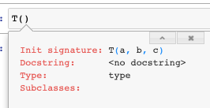
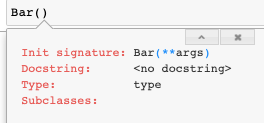
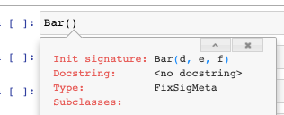

from fastcore.foundation import *
from nbdev.showdoc import *
from fastcore.nb_imports import *Meta
Metaclasses
See this blog post for more information about metaclasses.
FixSigMetapreserves information that enables intropsection of signatures (i.e. tab completion in IDEs) when certain types of inheritence would otherwise obfuscate this introspection.PrePostInitMetaensures that the classes defined with it run__pre_init__and__post_init__(without having to writeself.__pre_init__()andself.__post_init__()in the actualinitNewChkMetagives thePrePostInitMetafunctionality and ensures classes defined with it don’t re-create an object of their type whenever it’s passed to the constructorBypassNewMetaensures classes defined with it can easily be casted form objects they subclass.
test_sig
test_sig (f, b)
Test the signature of an object
def func_1(h,i,j): pass
def func_2(h,i=3, j=[5,6]): pass
class T:
def __init__(self, a, b): pass
test_sig(func_1, '(h, i, j)')
test_sig(func_2, '(h, i=3, j=[5, 6])')
test_sig(T, '(a, b)')FixSigMeta
FixSigMeta (name, bases, dict)
A metaclass that fixes the signature on classes that override __new__
When you inherit from a class that defines __new__, or a metaclass that defines __call__, the signature of your __init__ method is obfuscated such that tab completion no longer works. FixSigMeta fixes this issue and restores signatures.
To understand what FixSigMeta does, it is useful to inspect an object’s signature. You can inspect the signature of an object with inspect.signature:
class T:
def __init__(self, a, b, c): pass
inspect.signature(T)<Signature (a, b, c)>This corresponds to tab completion working in the normal way:

However, when you inherhit from a class that defines __new__ or a metaclass that defines __call__ this obfuscates the signature by overriding your class with the signature of __new__, which prevents tab completion from displaying useful information:
class Foo:
def __new__(self, **args): pass
class Bar(Foo):
def __init__(self, d, e, f): pass
inspect.signature(Bar)<Signature (d, e, f)>
Finally, the signature and tab completion can be restored by inheriting from the metaclass FixSigMeta as shown below:
class Bar(Foo, metaclass=FixSigMeta):
def __init__(self, d, e, f): pass
test_sig(Bar, '(d, e, f)')
inspect.signature(Bar)<Signature (d, e, f)>
If you need to define a metaclass that overrides __call__ (as done in PrePostInitMeta), you need to inherit from FixSigMeta instead of type when constructing the metaclass to preserve the signature in __init__. Be careful not to override __new__ when doing this:
class TestMeta(FixSigMeta):
# __new__ comes from FixSigMeta
def __call__(cls, *args, **kwargs): pass
class T(metaclass=TestMeta):
def __init__(self, a, b): pass
test_sig(T, '(a, b)')On the other hand, if you fail to inherit from FixSigMeta when inheriting from a metaclass that overrides __call__, your signature will reflect that of __call__ instead (which is often undesirable):
class GenericMeta(type):
"A boilerplate metaclass that doesn't do anything for testing."
def __new__(cls, name, bases, dict):
return super().__new__(cls, name, bases, dict)
def __call__(cls, *args, **kwargs): pass
class T2(metaclass=GenericMeta):
def __init__(self, a, b): pass
# We can avoid this by inheriting from the metaclass `FixSigMeta`
test_sig(T2, '(*args, **kwargs)')PrePostInitMeta
PrePostInitMeta (name, bases, dict)
A metaclass that calls optional __pre_init__ and __post_init__ methods
__pre_init__ and __post_init__ are useful for initializing variables or performing tasks prior to or after __init__ being called, respectively. Fore example:
class _T(metaclass=PrePostInitMeta):
def __pre_init__(self): self.a = 0;
def __init__(self,b=0): self.b = self.a + 1; assert self.b==1
def __post_init__(self): self.c = self.b + 2; assert self.c==3
t = _T()
test_eq(t.a, 0) # set with __pre_init__
test_eq(t.b, 1) # set with __init__
test_eq(t.c, 3) # set with __post_init__One use for PrePostInitMeta is avoiding the __super__().__init__() boilerplate associated with subclassing, such as used in AutoInit.
AutoInit
AutoInit (*args, **kwargs)
Same as object, but no need for subclasses to call super().__init__
This is normally used as a mixin, eg:
class TestParent():
def __init__(self): self.h = 10
class TestChild(AutoInit, TestParent):
def __init__(self): self.k = self.h + 2
t = TestChild()
test_eq(t.h, 10) # h=10 is initialized in the parent class
test_eq(t.k, 12)NewChkMeta
NewChkMeta (name, bases, dict)
Metaclass to avoid recreating object passed to constructor
NewChkMeta is used when an object of the same type is the first argument to your class’s constructor (i.e. the __init__ function), and you would rather it not create a new object but point to the same exact object.
This is used in L, for example, to avoid creating a new object when the object is already of type L. This allows the users to defenisvely instantiate an L object and just return a reference to the same object if it already happens to be of type L.
For example, the below class _T optionally accepts an object o as its first argument. A new object is returned upon instantiation per usual:
class _T():
"Testing"
def __init__(self, o):
# if `o` is not an object without an attribute `foo`, set foo = 1
self.foo = getattr(o,'foo',1)t = _T(3)
test_eq(t.foo,1) # 1 was not of type _T, so foo = 1
t2 = _T(t) #t1 is of type _T
assert t is not t2 # t1 and t2 are different objectsHowever, if we want _T to return a reference to the same object when passed an an object of type _T we can inherit from the NewChkMeta class as illustrated below:
class _T(metaclass=NewChkMeta):
"Testing with metaclass NewChkMeta"
def __init__(self, o=None, b=1):
# if `o` is not an object without an attribute `foo`, set foo = 1
self.foo = getattr(o,'foo',1)
self.b = bWe can now test t and t2 are now pointing at the same object when using this new definition of _T:
t = _T(3)
test_eq(t.foo,1) # 1 was not of type _T, so foo = 1
t2 = _T(t) # t2 will now reference t
test_is(t, t2) # t and t2 are the same object
t2.foo = 5 # this will also change t.foo to 5 because it is the same object
test_eq(t.foo, 5)
test_eq(t2.foo, 5)However, there is one exception to how NewChkMeta works. If you pass any additional arguments in the constructor a new object is returned, even if the first object is of the same type. For example, consider the below example where we pass the additional argument b into the constructor:
t3 = _T(t, b=1)
assert t3 is not t
t4 = _T(t) # without any arguments the constructor will return a reference to the same object
assert t4 is tFinally, it should be noted that NewChkMeta as well as all other metaclases in this section, inherit from FixSigMeta. This means class signatures will always be preserved when inheriting from this metaclass (see docs for FixSigMeta for more details):
test_sig(_T, '(o=None, b=1)')BypassNewMeta
BypassNewMeta (name, bases, dict)
Metaclass: casts x to this class if it’s of type cls._bypass_type
BypassNewMeta is identical to NewChkMeta, except for checking for a class as the same type, we instead check for a class of type specified in attribute _bypass_type.
In NewChkMeta, objects of the same type passed to the constructor (without arguments) would result into a new variable referencing the same object. However, with BypassNewMeta this only occurs if the type matches the _bypass_type of the class you are defining:
class _TestA: pass
class _TestB: pass
class _T(_TestA, metaclass=BypassNewMeta):
_bypass_type=_TestB
def __init__(self,x): self.x=xIn the below example, t does not refer to t2 because t is of type _TestA while _T._bypass_type is of type TestB:
t = _TestA()
t2 = _T(t)
assert t is not t2However, if t is set to _TestB to match _T._bypass_type, then both t and t2 will refer to the same object.
t = _TestB()
t2 = _T(t)
t2.new_attr = 15
test_is(t, t2)
# since t2 just references t these will be the same
test_eq(t.new_attr, t2.new_attr)
# likewise, chaning an attribute on t will also affect t2 because they both point to the same object.
t.new_attr = 9
test_eq(t2.new_attr, 9)Metaprogramming
empty2none
empty2none (p)
Replace Parameter.empty with None
anno_dict
anno_dict (f)
__annotation__ dictionary withemptycast toNone`, returning empty if doesn’t exist
def _f(a:int, b:L)->str: ...
test_eq(anno_dict(_f), {'a': int, 'b': L, 'return': str})use_kwargs_dict
use_kwargs_dict (keep=False, **kwargs)
Decorator: replace **kwargs in signature with names params
Replace all **kwargs with named arguments like so:
@use_kwargs_dict(y=1,z=None)
def foo(a, b=1, **kwargs): pass
test_sig(foo, '(a, b=1, *, y=1, z=None)')Add named arguments, but optionally keep **kwargs by setting keep=True:
@use_kwargs_dict(y=1,z=None, keep=True)
def foo(a, b=1, **kwargs): pass
test_sig(foo, '(a, b=1, *, y=1, z=None, **kwargs)')use_kwargs
use_kwargs (names, keep=False)
Decorator: replace **kwargs in signature with names params
use_kwargs is different than use_kwargs_dict as it only replaces **kwargs with named parameters without any default values:
@use_kwargs(['y', 'z'])
def foo(a, b=1, **kwargs): pass
test_sig(foo, '(a, b=1, *, y=None, z=None)')You may optionally keep the **kwargs argument in your signature by setting keep=True:
@use_kwargs(['y', 'z'], keep=True)
def foo(a, *args, b=1, **kwargs): pass
test_sig(foo, '(a, *args, b=1, y=None, z=None, **kwargs)')delegates
delegates (to:function=None, keep=False, but:list=None)
Decorator: replace **kwargs in signature with params from to
| Type | Default | Details | |
|---|---|---|---|
| to | function | None | Delegatee |
| keep | bool | False | Keep kwargs in decorated function? |
| but | list | None | Exclude these parameters from signature |
A common Python idiom is to accept **kwargs in addition to named parameters that are passed onto other function calls. It is especially common to use **kwargs when you want to give the user an option to override default parameters of any functions or methods being called by the parent function.
For example, suppose we have have a function foo that passes arguments to baz like so:
def baz(a, b:int=2, c:int=3): return a + b + c
def foo(c, a, **kwargs):
return c + baz(a, **kwargs)
assert foo(c=1, a=1) == 7The problem with this approach is the api for foo is obfuscated. Users cannot introspect what the valid arguments for **kwargs are without reading the source code. When a user tries tries to introspect the signature of foo, they are presented with this:
inspect.signature(foo)<Signature (c, a, **kwargs)>We can address this issue by using the decorator delegates to include parameters from other functions. For example, if we apply the delegates decorator to foo to include parameters from baz:
@delegates(baz)
def foo(c, a, **kwargs):
return c + baz(a, **kwargs)
test_sig(foo, '(c, a, *, b: int = 2)')
inspect.signature(foo)<Signature (c, a, *, b: int = 2)>We can optionally decide to keep **kwargs by setting keep=True:
@delegates(baz, keep=True)
def foo(c, a, **kwargs):
return c + baz(a, **kwargs)
inspect.signature(foo)<Signature (c, a, *, b: int = 2, **kwargs)>It is important to note that only parameters with default parameters are included. For example, in the below scenario only c, but NOT e and d are included in the signature of foo after applying delegates:
def basefoo(e, d, c=2): pass
@delegates(basefoo)
def foo(a, b=1, **kwargs): pass
inspect.signature(foo) # e and d are not included b/c they don't have default parameters.<Signature (a, b=1, *, c=2)>The reason that required arguments (i.e. those without default parameters) are automatically excluded is that you should be explicitly implementing required arguments into your function’s signature rather than relying on delegates.
Additionally, you can exclude specific parameters from being included in the signature with the but parameter. In the example below, we exclude the parameter d:
def basefoo(e, c=2, d=3): pass
@delegates(basefoo, but= ['d'])
def foo(a, b=1, **kwargs): pass
test_sig(foo, '(a, b=1, *, c=2)')
inspect.signature(foo)<Signature (a, b=1, *, c=2)>You can also use delegates between methods in a class. Here is an example of delegates with class methods:
# example 1: class methods
class _T():
@classmethod
def foo(cls, a=1, b=2):
pass
@classmethod
@delegates(foo)
def bar(cls, c=3, **kwargs):
pass
test_sig(_T.bar, '(c=3, *, a=1, b=2)')Here is the same example with instance methods:
# example 2: instance methods
class _T():
def foo(self, a=1, b=2):
pass
@delegates(foo)
def bar(self, c=3, **kwargs):
pass
t = _T()
test_sig(t.bar, '(c=3, *, a=1, b=2)')You can also delegate between classes. By default, the delegates decorator will delegate to the superclass:
class BaseFoo:
def __init__(self, e, c=2): pass
@delegates()# since no argument was passsed here we delegate to the superclass
class Foo(BaseFoo):
def __init__(self, a, b=1, **kwargs): super().__init__(**kwargs)
test_sig(Foo, '(a, b=1, *, c=2)')method
method (f)
Mark f as a method
The method function is used to change a function’s type to a method. In the below example we change the type of a from a function to a method:
def a(x=2): return x + 1
assert type(a).__name__ == 'function'
a = method(a)
assert type(a).__name__ == 'method'funcs_kwargs
funcs_kwargs (as_method=False)
Replace methods in cls._methods with those from kwargs
The func_kwargs decorator allows you to add a list of functions or methods to an existing class. You must set this list as a class attribute named _methods when defining your class. Additionally, you must incldue the **kwargs argument in the ___init__ method of your class.
After defining your class this way, you can add functions to your class upon instantation as illusrated below.
For example, we define class T to allow adding the function b to class T as follows (note that this function is stored as an attribute of T and doesn’t have access to cls or self):
@funcs_kwargs
class T:
_methods=['b'] # allows you to add method b upon instantiation
def __init__(self, f=1, **kwargs): pass # don't forget to include **kwargs in __init__
def a(self): return 1
def b(self): return 2
t = T()
test_eq(t.a(), 1)
test_eq(t.b(), 2)Because we defined the class T this way, the signature of T indicates the option to add the function or method(s) specified in _methods. In this example, b is added to the signature:
test_sig(T, '(f=1, *, b=None)')
inspect.signature(T)<Signature (f=1, *, b=None)>You can now add the function b to class T upon instantiation:
def _new_func(): return 5
t = T(b = _new_func)
test_eq(t.b(), 5)If you try to add a function with a name not listed in _methods it will be ignored. In the below example, the attempt to add a function named a is ignored:
t = T(a = lambda:3)
test_eq(t.a(), 1) # the attempt to add a is ignored and uses the original method instead.Note that you can also add methods not defined in the original class as long it is specified in the _methods attribute:
@funcs_kwargs
class T:
_methods=['c']
def __init__(self, f=1, **kwargs): pass
t = T(c = lambda: 4)
test_eq(t.c(), 4)Until now, these examples showed how to add functions stored as an instance attribute without access to self. However, if you need access to self you can set as_method=True in the func_kwargs decorator to add a method instead:
def _f(self,a=1): return self.num + a # access the num attribute from the instance
@funcs_kwargs(as_method=True)
class T:
_methods=['b']
num = 5
t = T(b = _f) # adds method b
test_eq(t.b(5), 10) # self.num + 5 = 10Here is an example of how you might use this functionality with inheritence:
def _f(self,a=1): return self.num * a #multiply instead of add
class T2(T):
def __init__(self,num):
super().__init__(b = _f) # add method b from the super class
self.num=num
t = T2(num=3)
test_eq(t.b(a=5), 15) # 3 * 5 = 15
test_sig(T2, '(num)')